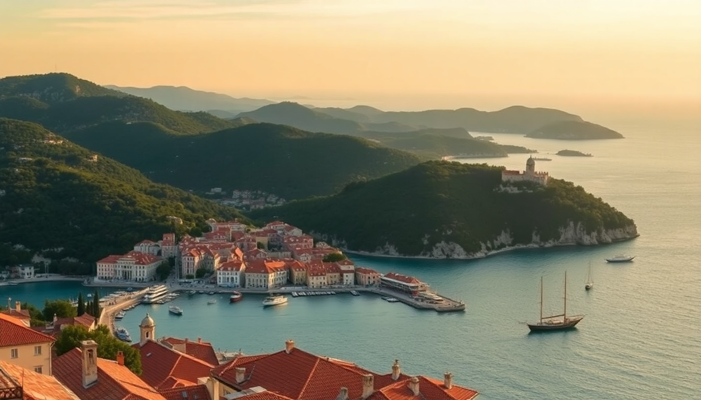

7-Day Croatia Itinerary: Dubrovnik, Split & Hvar

I spent a week hopping between Dubrovnik, Split, and Hvar last June, and here is exactly how I’d do it again — ferry schedules, hotel names, and the one restaurant I’d skip next time.
How do you get from Dubrovnik to Split (and Split to Hvar)?
You take the catamaran, not the bus. The Jadrolinija ferry from Dubrovnik to Split runs daily in summer (around 4.5 hours, one-way). I booked a seat on the Krilo catamaran instead — it’s faster (about 3 hours) and drops you right at Split’s Riva waterfront. For Split to Hvar, the same company runs a 1-hour direct catamaran. Both routes sell out in July and August, so book online at least a week ahead.
- Jadrolinija ferry — cheaper, slower, more space for luggage
- Krilo catamaran — faster, fewer stops, my pick
- Kapetan Luka — another good catamaran operator for Split-Hvar
What should I do in Dubrovnik in 2 days?
Day one: walk the city walls early (8 AM opening, beat the cruise crowds by 30 minutes). Then get lost in the side alleys off Stradun — the main street is a zoo after 10 AM. I grabbed lunch at Konoba Kamenice (black risotto, no frills, locals eat there). Day two: take the cable car up to Mount Srđ for the view, but skip the restaurant at the top — overpriced and average. Instead, hike down through the forest path (45 minutes) and finish at Banje Beach for a swim.
- Walls of Dubrovnik — 2 km loop, €35 entry, worth it once
- Mount Srđ cable car — €27 round trip, go before noon for clear skies
- Konoba Kamenice — seafood spot near the old port, cash only
- Buža Bar — cliffside drinks, touristy but the sunset view is legit
- Lokanda Peskarija — good grilled fish, right on the harbor
Is Split worth more than one day?
Yes, but not for Diocletian’s Palace alone — you can see the main bits (Peristyle, Jupiter’s Temple, the underground cellars) in half a day. The real draw is the waterfront promenade (Riva) at dusk and the Marjan Hill hike. I spent a full day just swimming at Kašjuni Beach (pebbly, clear water, 20-minute walk from the palace). For dinner, Konoba Marjan serves grilled squid and local wine in a garden setting — no English menu, which is a good sign.
- Diocletian’s Palace — free to wander, paid entry for the cellars (€10)
- Marjan Hill — free, 30-minute climb, panoramic view of the islands
- Kašjuni Beach — less crowded than Bačvice, better for swimming
- Konoba Marjan — tucked away on a side street, book ahead
- Uje Oil Bar — good for olive oil tasting and a quick lunch
How long should I stay on Hvar island?
Two nights is enough. One day for the town (Hvar Town) and the fortress, one day for a boat trip to the Pakleni Islands (tiny coves, turquoise water, no cars). I stayed at Hotel Podstine — a 10-minute walk from the main square, quieter than the party hotels near the port, with its own rocky beach. Avoid the nightclubs on the main square if you want sleep; they blast music until 3 AM June through September.
- Fortica Fortress — 20-minute uphill walk, €6 entry, best in late afternoon
- Pakleni Islands water taxi — €15 round trip, runs hourly
- Hotel Podstine — mid-range, private beach, book directly for a better rate
- Konoba Menego — traditional dalmatian dishes, small terrace, friendly owner
- Falko Beach Bar — on the Pakleni Islands, expensive but the loungers are free if you buy a drink
What’s the best way to get around between these places?
Ferries and catamarans are the only practical option for Dubrovnik-Split-Hvar. I used Krilo for all three legs and booked via their website (no third-party markup). Inside each city, walk — Dubrovnik’s old town is car-free, Split’s center is compact, and Hvar town is small enough to cover on foot. For airport transfers, I took the Plitvice Bus shuttle from Dubrovnik Airport to the old town (€8, runs every 30 minutes).
- Krilo catamaran — best for speed, book at krilo.hr
- Jadrolinija ferry — best for budget, check the seasonal schedule
- Uber — available in Split, not in Dubrovnik old town (pedestrian zone)
- Local bus #1A — from Split Airport to the bus station, €4
Where should I eat in each city to avoid tourist traps?
In Dubrovnik, skip anything on Stradun. Konoba Dalmatino (just off the main street) does a good peka — lamb and potatoes slow-cooked under a bell — for two people. In Split, Villa Spiza is tiny (six tables) and cash-only, but the pasta with truffles is the best I had in Croatia. On Hvar, Konoba Kokolo in the old town serves grilled fish with a view of the harbor, and the waiter actually recommended the cheaper local white wine over the expensive imported one.
- Konoba Dalmatino (Dubrovnik) — book 24 hours ahead for peka
- Villa Spiza (Split) — no reservations, queue at 7 PM
- Konoba Kokolo (Hvar) — reasonable prices for harbor-side dining
- Bokeria (Split) — trendy, good for a lighter meal, decent cocktails
- Akon (Hvar) — bakery for burek and coffee, cheap breakfast
FAQ
How many days do I need in Croatia for Dubrovnik, Split, and Hvar? Seven days is tight but doable: 2 days Dubrovnik, 2 days Split, 2 days Hvar, plus travel days. If you have an extra day, add it to Hvar for the Pakleni Islands trip.
Is Croatia expensive for a week-long trip? It’s moderate. Mid-range hotels run €100-160 a night in summer, ferry tickets are €20-40 per leg, and a meal with wine is about €25-35 per person. Dubrovnik is pricier than Split or Hvar.
Should I rent a car for this itinerary? No. The islands are only reachable by ferry, and parking in Dubrovnik old town is a nightmare. Stick to ferries and walking.
Conclusion
- Spend 2 nights in Dubrovnik, 2 in Split, and 2 in Hvar — any less feels rushed.
- Book catamaran tickets in advance, especially for the Dubrovnik-Split leg.
- Eat at local konobas off the main streets, not the restaurants with picture menus.
- Bring swim shoes — most beaches are pebbly, not sandy.
- Skip the day trips to Krka or Plitvice unless you have two extra days; this itinerary is coastal only.